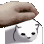
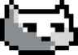

Know that most gwas are known to have a left-facing version of themselves, none are documented here except for the original gwaleft.

Has a childlike innocence and is very kind. Seems to have immense power but is also very reluctant to use the power.
Seems to be exactly like gwa, but its appearance is inverted.


gwacoins are the official currency of the gwas, and are worth massive amounts of human money.
Though gwas do not mate they still have romantic relationships.
Though gwas traditionally face right, facing left was legalized in [???] (gwa years)

This gwa enjoys pats.


It hates starboard.
Perhaps you'd like to take a break from reading this to join it?
This gwa accepts everything it is asked.

It is very strange and doesn't behave like other gwas.
It is incredibly strange, even more than pissgwa.
It has merged with two zamboners, which were thought to be extinct.


This gwa is even more pixelated than gwa1990.


CAMPAEO DE MUNDO üáßüá∑üáßüá∑üáßüá∑üáßüá∑üáßüá∑üáßüá∑üáßüá∑
Day 1: 4/1/22
9:05am EST: r/place Opens
9:08am EST: The first gwa is created at (896, 396)
9:32am EST: After the first gwa being griefed constantly a second gwa is attempted at (836, 396)
9:39am EST: Randoms begin transforming the gwa into a much different cat
9:51am EST: The gwartists choose to stand their ground. This is also when Italy was first mentioned, foreshadowing a dark future.
10am EST: The struggle to build gwa continues.
10:30am EST: The struggle still continues, but a lot more progress has been made. Italy has been stalled and faded from the minds of the gwartists
10:42am EST: “Italy is advancing fast”
10:55am EST: Italy is dangerously close to gwa
10:58am EST: Italian Pixels touch gwa
10:59am EST: Within a minute gwa is viewed as being doomed and the team evacuates to (196, 296)
11:12am EST: gwa2 is officially paved over by Italy after they took a short break. Construction continues on gwa3
11:25am EST: Construction continues slowly but surely.
12pm EST: The endless struggle drags on.
12:24pm EST: The first pixels of the “Rock & Stone” sign are noticed.
12:41pm EST: gwa is griefed and “browned”.
1:33pm EST: After many griefs and morale failing, the true threat of “Rock & Stone” is realized.
1:37pm EST: “Rock & Stone”, along with the steve face, closes in around gwa.
1:51pm EST: All determination to build a gwa has faded.
2pm EST: Determination to defend the gwa returns as “Rock & Stone” seems to be respecting gwa’s borders.
2:10pm EST: “Rock & Stone” closes in on gwa
2:19pm EST: Outline of the gwa is broken down.
2:23pm EST: “gwa regrets its life choices”
2:26pm EST: Plans shift from defending gwa to attacking “Rock & Stone ”
2:30pm EST: “Cock & Stone”
2:32pm EST: Sundex goes to r/thebluecorner for help
3:01pm EST: The last of the coordinated vandalism seems to end
5:01pm EST: The conversation about allying with the Irish begins
8:26pm EST: Invite to the Irish discord server is posted, negotiations begin.
9:07 EST: “Nothing is set in stone and they are too tired to discuss today”, which perfectly sums up these negotiations.
11:49pm: “:gwa1990” is the last message in #gwa-place-event for the day.